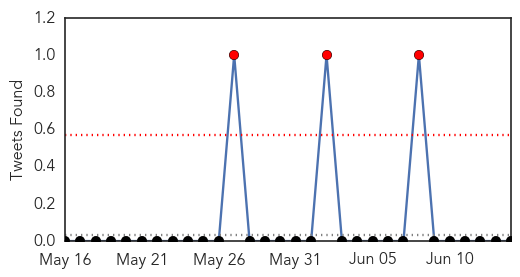
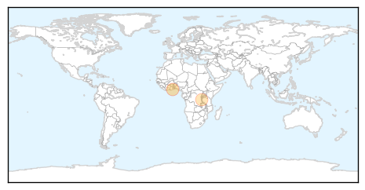

Cholera
30-Day Web Trend
5 alerts, 0 warnings
30-Day Twitter Trend
3 alerts, 0 warnings

Article Locations
Article Confidences

Top Articles:
Top Tweets:
-
No tweets found for Jun 14, 2015
Ebola
30-Day Web Trend
0 alerts, 0 warnings

30-Day Twitter Trend
0 alerts, 0 warnings

Article Locations

Article Confidences

Top Articles:
- 1.000
- Decline in Ebola cases stalls in West Africa
- 0.999
- Ebola could hit again and we would hardly do better -MSFHealthcare
- 0.999
- NGO warns world leaders W.Africa not ready for new Ebola outbreak
- 0.999
- Sierra Leone Enforces Curfew as Ebola Virus Resurfaces in North West Regions
- 0.998
- Ebola could hit again and we would hardly do better
- 0.997
- Ebola ‘could hit again in West Africa’
- 0.997
- National Geographic Magazine
- 0.996
- Ebola could hit again - MSF - Africa
- 0.995
- Hawaii Tribune-Herald
- 0.995
- Sierra Leone leader imposes curfew in bid to halt Ebola
- 0.990
- Ebola nurse Will Pooley gets MBE
- 0.977
- PH ready to contain Mers—Palace
- 0.969
- PM urges Thais to be health conscious amidst MERS outbreak
- 0.968
- Ebola is on the rise again — and the world is no better prepared for it than last year
- 0.965
- North Korea vows 'watertight' measures against Mers, East Asia News & Top Stories
- 0.963
- N Korea vows 'watertight' measures against MERS
- 0.956
- Opening remarks by SFH at media session after meeting Professor Malik Peiris and Professor David Hui
- 0.945
- Please don't put me under quarantine
- 0.938
- North Korea vows ‘watertight’ measures against MERS
- 0.937
- N Korea vows 'watertight' measures against MERS
- 0.892
- Ebola fears: Milford Father Files Suit After Daughter Told To Stay Home From School Over Ebola Concerns
- 0.873
- Sepsis: What You Need To Know
- 0.868
- Ebola Medal created to recognise the people helped to stop the spread of Ebola
- 0.827
- 10 things you need to know today
- 0.726
- The world still isn't equipped to handle Ebola, Doctors Without Borders says
- 0.708
- Symantec Security Response: MERS outbreak used as bait to spread Trojan.Swort
- 0.614
- Liberian President Praises Cuba for Ebola Crisis Help
- 0.502
- World briefs: Egypt sends 23 to prison in Shiite killings
Top Tweets:
- 0.923
- Ebola fight not over yet: MSF - Reuters http://t.co/4E7IRJYOwx ebola EVD
- 0.908
- Cette épidémie a débuté avec une personne infectée. C’est pourquoi nous devons libérer l’humanité du virus Ebola http://t.co/WVW5C9BPb8
- 0.893
- The world still isn't equipped to handle Ebola, Doctors Without Borders says - The Week Magazine http://t.co/mnKpusazXD ebola EVD
- 0.868
- soutient l'Afrique contre Ebola AfricaAgainstEbola onstensemble AUSummit 25thAUsummit https://t.co/eCPTqurAz2
- 0.861
- Liberian President Praises Cuba for Ebola Crisis Help - teleSUR English http://t.co/E6qnHoR9oh ebola EVD
- 0.859
- Thank you Africa Liberia is on Zero Ebola cases, let's get Guinea and Sierra Leone to Zero, help MakeHealthHappen AUSummit 25thAUSummit
- 0.839
- RT: The lesson from the Ebola Virus Disease is that with African solidarity & resolve, we can find our own solutions to our c…
- 0.839
- MSF: Ebola fight not over yet - Washington Post http://t.co/2oncEXCtix ebola EVD
- 0.806
- Flu, MERS, Ebola...When sensible, thorough & rapid epidemiological analysis is required, you can expect to see MVK! https://t.co/sRrC4r4Unt
- 0.794
- We are Africa against Ebola AUsummit 25thAUsummit SATY2015 https://t.co/dGGc5h94BI
- 0.759
- Learn more here how Ebola cases have risen in Guinea and Sierra Leone https://t.co/uzOoMmkuPw makehealthhappen 25thausummit AUSummit
- 0.757
- Indy native who beat Ebola wins prestigious award - Indianapolis Business Journal http://t.co/Oc1Ab63UOQ ebola EVD
- 0.644
- RT: Ebola exposed the weaknesses of our health systems. Henceforth we must train more health workers, & build & strengthen ou…
- 0.604
- Together we can fight the Ebola epidemic! donate R10 today! AUSummit Africaagainstebola http://t.co/wdDpxt1ePl
- 0.588
- Bellevue Hospital chosen as one of nine regional Ebola treatment centers - New York Daily News http://t.co/dEOurmMMT1 ebola EVD
- 0.556
- L’Ebola n’est pas terminée et les efforts doivent être poursuivis pour atteindre zéro cas dans toute la région http://t.co/IIQEyYXLj2
- 0.545
- Together we can defeat Ebola, Africaagainstebola AUsummit 25thAUsummit https://t.co/IHNZToeztX